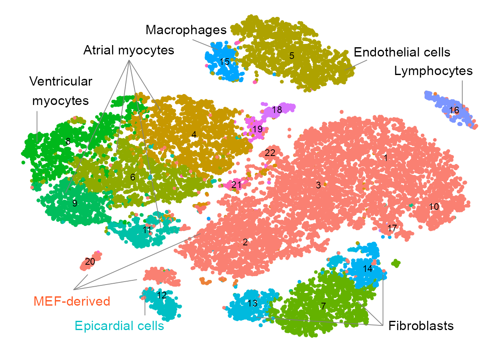

Unbiased Reprogramming with 48 Factors by Reprogram-Seq
Jialei Duan ![]()
Reprogram-Seq leverages organ-specific cell atlas data with single-cell perturbation and computational analysis to predict, evaluate, and optimize TF combinations that reprogram a cell type of interest.
Sys.time()[1] "2022-09-24 02:48:54 CDT"[1] "America/Chicago"Preparation
Functions
Load required packages.
`%+replace%` <- ggplot2::`%+replace%`Symbols
PROJECT_DIR <- file.path(
"/Users/jialei/Dropbox/Data/Projects/UTSW/Cellular_reprogramming",
"Cardiac_reprogramming/Data_submission/Github"
)gene_symbols <- vroom::vroom(
file = file.path(
PROJECT_DIR, "data", "misc", "genes.tsv"
),
col_names = FALSE
)
gene_symbols <- setNames(object = gene_symbols$X2, nm = gene_symbols$X1)
gene_symbols |> head()ENSMUSG00000051951 ENSMUSG00000089699 ENSMUSG00000102343 ENSMUSG00000025900
"Xkr4" "Gm1992" "Gm37381" "Rp1"
ENSMUSG00000109048 ENSMUSG00000025902
"Rp1" "Sox17" length(gene_symbols)[1] 27999Matrix
matrix_readcount_use <- Matrix::sparseMatrix(
i = readRDS(
file.path(
PROJECT_DIR, "data/drop-seq", "expr_readcount_raw_csc_indices.rds"
)
),
p = readRDS(
file.path(
PROJECT_DIR, "data/drop-seq", "expr_readcount_raw_csc_indptr.rds"
)
),
x = readRDS(
file.path(
PROJECT_DIR, "data/drop-seq", "expr_readcount_raw_csc_values.rds"
)
),
dims = readRDS(
file.path(
PROJECT_DIR, "data/drop-seq", "expr_readcount_raw_csc_shape.rds"
)
),
dimnames = readRDS(
file.path(
PROJECT_DIR, "data/drop-seq", "expr_readcount_raw_csc_dimnames.rds"
)
),
index1 = FALSE
)dim(matrix_readcount_use)[1] 27999 27416rownames(matrix_readcount_use) <- paste(
rownames(matrix_readcount_use),
gene_symbols[rownames(matrix_readcount_use)],
sep = "_"
)
matrix_readcount_use[1:5, 1:5] |>
as.matrix() |>
knitr::kable()| JD126-1-2_TTTCTATATACA.bam | JD126-1-2_CCTAGAAACCAG.bam | JD126-1-2_TCATAGTCTATT.bam | JD126-1-2_ATGACCTTTCCC.bam | JD126-1-2_CATTAGTGATGG.bam | |
|---|---|---|---|---|---|
| ENSMUSG00000051951_Xkr4 | 0 | 0 | 0 | 0 | 0 |
| ENSMUSG00000089699_Gm1992 | 0 | 0 | 0 | 0 | 0 |
| ENSMUSG00000102343_Gm37381 | 0 | 0 | 0 | 0 | 0 |
| ENSMUSG00000025900_Rp1 | 0 | 0 | 0 | 0 | 0 |
| ENSMUSG00000109048_Rp1 | 0 | 0 | 0 | 0 | 0 |
Embedding
dim(embedding)[1] 25776 7Check memory usage.
purrr::walk(
list(matrix_readcount_use, embedding), \(x) {
print(object.size(x), units = "auto", standard = "SI")
}
)751.2 MB
3.4 MBClustering
x_column <- "x"
y_column <- "y"
GEOM_POINT_SIZE <- 0.5
EMBEDDING_TITLE_PREFIX <- "t-SNE"
RASTERISED <- FALSEEmbedding
embedding |>
tibble::rownames_to_column(var = "cell") |>
dplyr::mutate(
num_umis = colSums(matrix_readcount_use[, cell]),
num_features = colSums(matrix_readcount_use[, cell] > 0),
) |>
dplyr::rename(batch = batch.id) |>
dplyr::group_by(batch) |>
dplyr::summarise(
num_cells = n(),
median_umis = median(num_umis),
median_features = median(num_features)
) |>
gt::gt() |>
gt::data_color(
columns = c(median_umis),
colors = scales::col_numeric(
palette = c(
"green", "orange", "red"
),
domain = NULL
)
) |>
gt::summary_rows(
columns = c(batch),
fns = list(
Count = ~ n()
),
decimals = 0
) |>
gt::summary_rows(
columns = c(num_cells),
fns = list(
Sum = ~ sum(.)
),
decimals = 0
) |>
gt::summary_rows(
columns = c(num_cells:median_features),
fns = list(
Mean = ~ mean(.)
),
decimals = 2
) |>
gt::tab_header(
title = gt::md("**Drop-Seq**; Batch")
) |>
gt::tab_source_note(
source_note = gt::md(
"***[Here](https://www.ncbi.nlm.nih.gov/geo/query/acc.cgi?acc=GSE117795)** are the details.*"
)
)| Drop-Seq; Batch | ||||
| batch | num_cells | median_umis | median_features | |
|---|---|---|---|---|
| JD126-1-2 | 335 | 3697.0 | 1839.0 | |
| JD126A1 | 289 | 3499.0 | 1669.0 | |
| JD126A5 | 310 | 3575.0 | 1759.5 | |
| JD126B | 625 | 3604.0 | 1733.0 | |
| JD131-A | 418 | 1765.0 | 1105.0 | |
| JD131-B | 371 | 1895.0 | 1146.0 | |
| JD131-C | 381 | 1894.0 | 1168.0 | |
| JD135A | 101 | 3203.0 | 1521.0 | |
| JD135Y | 222 | 1755.5 | 1007.0 | |
| JD135Z | 92 | 1890.0 | 966.5 | |
| JD136A | 172 | 2348.5 | 1285.5 | |
| JD136B | 269 | 1603.0 | 975.0 | |
| JD136C | 168 | 1140.5 | 734.0 | |
| JD136DE | 370 | 1042.5 | 694.0 | |
| JD136F | 251 | 1752.0 | 993.0 | |
| JD136G | 500 | 1341.5 | 827.0 | |
| JD137A | 268 | 2796.5 | 1410.5 | |
| JD145A1 | 269 | 3332.0 | 1623.0 | |
| JD145A5 | 267 | 2911.0 | 1503.0 | |
| JD145B1 | 284 | 3531.5 | 1704.0 | |
| JD145B5 | 287 | 1905.0 | 1045.0 | |
| JD145C | 169 | 2235.0 | 1056.0 | |
| JD145D | 187 | 1797.0 | 941.0 | |
| JD145E | 287 | 977.0 | 590.0 | |
| JD145F | 103 | 533.0 | 396.0 | |
| JD146A1 | 530 | 3210.5 | 1555.5 | |
| JD146A5 | 549 | 4260.0 | 1935.0 | |
| JD146B1 | 466 | 4879.5 | 1973.0 | |
| JD146B5 | 444 | 4035.5 | 1828.0 | |
| JD146C1 | 452 | 5129.5 | 2004.5 | |
| JD146C5 | 420 | 2922.0 | 1399.5 | |
| JD149A | 275 | 1118.0 | 699.0 | |
| JD149B | 251 | 823.0 | 531.0 | |
| JD149C | 382 | 1179.5 | 747.5 | |
| JD149D | 365 | 1054.0 | 688.0 | |
| JD149E | 236 | 854.5 | 603.0 | |
| JD150-3A | 393 | 1486.0 | 911.0 | |
| JD150-3B | 345 | 1624.0 | 1002.0 | |
| JD150-3C | 487 | 2110.0 | 1190.0 | |
| JD150-4A | 330 | 1652.0 | 962.0 | |
| JD150-4B | 370 | 1476.5 | 893.5 | |
| JD150A | 342 | 778.5 | 487.0 | |
| JD150B | 317 | 849.0 | 564.0 | |
| JD150C | 346 | 1372.0 | 888.5 | |
| JD150D | 465 | 1081.0 | 723.0 | |
| JD164_165 | 272 | 3324.5 | 1935.5 | |
| JD166_167 | 204 | 6267.5 | 3047.0 | |
| JD168A | 252 | 11674.5 | 4225.0 | |
| JD168B | 240 | 4899.5 | 2510.5 | |
| JD168C | 182 | 14665.5 | 4678.5 | |
| JD168_169 | 236 | 4234.5 | 2302.5 | |
| JD169A | 306 | 7700.0 | 3450.0 | |
| JD169B | 178 | 13284.5 | 4515.5 | |
| JD169C | 206 | 10929.5 | 4092.0 | |
| JD170A | 148 | 11175.0 | 4197.0 | |
| JD170B | 108 | 12311.0 | 4191.0 | |
| JD170C | 150 | 11961.5 | 4228.0 | |
| JD170_171 | 288 | 13620.5 | 4505.5 | |
| JD171A | 270 | 7281.0 | 3207.0 | |
| JD171B | 224 | 11545.0 | 4211.5 | |
| JD171C | 166 | 9291.0 | 3673.0 | |
| PZ473 | 168 | 9368.5 | 3888.5 | |
| PZ474 | 188 | 6470.0 | 3116.5 | |
| PZ475 | 326 | 11516.5 | 4077.0 | |
| PZ476 | 292 | 10177.5 | 3943.0 | |
| PZ477 | 552 | 5562.5 | 2731.0 | |
| PZ478 | 344 | 7171.0 | 3283.5 | |
| PZ479 | 356 | 9106.0 | 3655.0 | |
| PZ480 | 196 | 10180.5 | 3878.5 | |
| PZ481 | 132 | 11876.5 | 4161.0 | |
| PZ482 | 70 | 4286.0 | 2213.0 | |
| PZ483 | 98 | 4452.5 | 2233.5 | |
| PZ484 | 224 | 9902.5 | 3863.5 | |
| PZ485 | 264 | 10482.5 | 3963.5 | |
| PZ486 | 344 | 6220.0 | 2901.5 | |
| PZ487 | 238 | 5281.5 | 2571.5 | |
| PZ492 | 399 | 1618.0 | 960.0 | |
| PZ493 | 241 | 1394.0 | 841.0 | |
| PZ496 | 344 | 7004.5 | 3245.0 | |
| PZ497 | 208 | 9547.0 | 3810.5 | |
| PZ580 | 472 | 8199.5 | 3482.5 | |
| PZ581 | 360 | 6468.0 | 3058.5 | |
| PZ582 | 214 | 9730.5 | 3892.5 | |
| PZ583 | 120 | 10060.5 | 3977.0 | |
| PZ584 | 190 | 14141.5 | 4915.0 | |
| PZ585 | 152 | 15586.5 | 4924.0 | |
| PZ586 | 292 | 4879.0 | 2466.5 | |
| PZ587 | 204 | 11968.5 | 4318.5 | |
| PZ588 | 110 | 24547.5 | 5941.0 | |
| PZ589 | 110 | 11439.0 | 3965.5 | |
| PZ590 | 94 | 17243.5 | 5124.5 | |
| PZ660 | 148 | 2893.5 | 1478.0 | |
| PZ661 | 136 | 2414.5 | 1289.5 | |
| Count | 93 | — | — | — |
| Sum | — | 25,776 | — | — |
| Mean | — | 277.16 | 5,734.12 | 2,348.55 |
| Here are the details. | ||||
p_embedding_cluster <- plot_embedding(
data = embedding[, c(x_column, y_column)],
color = embedding$cluster |> as.factor(),
label = glue::glue("{EMBEDDING_TITLE_PREFIX}; Cluster"),
color_labels = TRUE,
color_legend = FALSE,
sort_values = FALSE,
rasterise = RASTERISED,
geom_point_size = GEOM_POINT_SIZE
) +
theme_customized_embedding()
p_embedding_UMI <- plot_embedding(
data = embedding[, c(x_column, y_column)],
color = log10(Matrix::colSums(matrix_readcount_use[, embedding$cell])),
label = glue::glue("{EMBEDDING_TITLE_PREFIX}; UMI"),
color_legend = TRUE,
sort_values = FALSE,
shuffle_values = TRUE,
rasterise = RASTERISED,
geom_point_size = GEOM_POINT_SIZE
) +
theme_customized_embedding()
p_embedding_MT <- plot_embedding(
data = embedding[, c(x_column, y_column)],
color = (colSums(matrix_readcount_use[
stringr::str_detect(
string = stringr::str_remove(
string = rownames(matrix_readcount_use),
pattern = "^E.+_"
),
pattern = "mt-"
),
]) / colSums(matrix_readcount_use))[embedding$cell],
label = glue::glue("{EMBEDDING_TITLE_PREFIX}; MT %"),
color_legend = TRUE,
sort_values = TRUE,
shuffle_values = FALSE,
rasterise = RASTERISED,
geom_point_size = GEOM_POINT_SIZE
) + theme_customized_embedding()
p_embedding_group <- plot_embedding(
data = embedding[, c(x_column, y_column)],
color = embedding$group |> as.factor(),
label = glue::glue("{EMBEDDING_TITLE_PREFIX}; Group"),
color_labels = FALSE,
color_legend = TRUE,
sort_values = FALSE,
shuffle_values = TRUE,
rasterise = RASTERISED,
geom_point_size = GEOM_POINT_SIZE
) +
theme_customized_embedding() +
ggplot2::scale_color_manual(
values = c(
Primary = "#00AFBB",
Reprogrammed = "#8BC34A",
Control = "#E7B800"
)
)embedding |>
dplyr::mutate(
num_umis = colSums(matrix_readcount_use[, cell]),
num_features = colSums(matrix_readcount_use[, cell] > 0),
) |>
dplyr::group_by(cluster) |>
dplyr::summarise(
num_cells = n(),
median_umis = median(num_umis),
median_features = median(num_features)
) |>
gt::gt() |>
gt::data_color(
columns = c(median_umis),
colors = scales::col_numeric(
palette = c(
"green", "orange", "red"
),
domain = NULL
)
) |>
gt::summary_rows(
columns = c(cluster),
fns = list(
Count = ~ n()
),
decimals = 0
) |>
gt::summary_rows(
columns = c(num_cells),
fns = list(
Sum = ~ sum(.)
),
decimals = 0
) |>
gt::tab_header(
title = gt::md("**Drop-Seq**; Clustering")
)| Drop-Seq; Clustering | ||||
| cluster | num_cells | median_umis | median_features | |
|---|---|---|---|---|
| 1 | 2875 | 13196.0 | 4578.0 | |
| 2 | 2798 | 8594.0 | 3639.5 | |
| 3 | 2786 | 6165.0 | 2905.0 | |
| 4 | 2710 | 933.0 | 561.5 | |
| 5 | 2356 | 1505.5 | 1013.0 | |
| 6 | 2139 | 2590.0 | 1249.0 | |
| 7 | 1934 | 2238.5 | 1347.0 | |
| 8 | 1575 | 5225.0 | 1891.0 | |
| 9 | 1075 | 5719.0 | 2203.0 | |
| 10 | 871 | 12955.0 | 4294.0 | |
| 11 | 708 | 4111.0 | 1872.5 | |
| 12 | 681 | 3495.0 | 1956.0 | |
| 13 | 669 | 2438.0 | 1483.0 | |
| 14 | 556 | 725.0 | 530.5 | |
| 15 | 478 | 2661.0 | 1606.5 | |
| 16 | 474 | 1368.0 | 906.5 | |
| 17 | 254 | 4995.5 | 2172.5 | |
| 18 | 236 | 1737.0 | 256.5 | |
| 19 | 181 | 620.0 | 372.0 | |
| 20 | 165 | 9490.0 | 3679.0 | |
| 21 | 133 | 5234.0 | 2464.0 | |
| 22 | 122 | 6274.0 | 2877.0 | |
| Count | 22 | — | — | — |
| Sum | — | 25,776 | — | — |
purrr::reduce(
list(
p_embedding_cluster,
p_embedding_UMI,
p_embedding_MT,
p_embedding_group
),
`+`
) +
patchwork::plot_layout(ncol = 2) +
patchwork::plot_annotation(
theme = ggplot2::theme(plot.margin = ggplot2::margin())
)
Attaching package: 'formattable'The following object is masked from 'package:patchwork':
areaembedding |>
dplyr::mutate(
num_umis = colSums(matrix_readcount_use[, cell]),
num_features = colSums(matrix_readcount_use[, cell] > 0),
) |>
dplyr::group_by(group) |>
dplyr::summarise(
num_cells = n(),
median_umis = median(num_umis),
median_features = median(num_features)
) |>
formattable::formattable(
list(
# num_cells = formattable::color_tile("transparent", "lightpink"),
num_cells = formattable::color_bar("Lightpink"),
median_umis = formattable::color_bar("lightgreen"),
median_features = formattable::color_bar("lightblue")
),
full_width = FALSE,
caption = "Drop-Seq; Group"
)| group | num_cells | median_umis | median_features |
|---|---|---|---|
| Primary | 15684 | 2030 | 1139 |
| Reprogrammed | 8730 | 8532 | 3562 |
| Control | 1362 | 9383 | 3789 |
## | column: body-outset
purrr::map(levels(embedding$group), \(x) {
plot_embedding(
data = embedding[, c(x_column, y_column)],
color = as.integer(embedding$group == x) |> as.factor(),
label = glue::glue(
"{EMBEDDING_TITLE_PREFIX}; {x}: {sum(embedding$group == x)}"
),
color_labels = FALSE,
color_legend = FALSE,
sort_values = TRUE,
shuffle_values = FALSE,
rasterise = RASTERISED,
geom_point_size = GEOM_POINT_SIZE
) +
theme_customized_embedding() +
ggplot2::scale_color_manual(
values = c("grey70", "salmon")
)
}) |>
purrr::reduce(`+`) +
patchwork::plot_layout(ncol = 3) +
patchwork::plot_annotation(
theme = ggplot2::theme(plot.margin = ggplot2::margin())
)
Extract colors from the initial plots to keep colors consistent.
color_palette <- ggplot2::ggplot_build(p_embedding_cluster)$data[[1]] |>
dplyr::select(color = colour, cluster = group) |>
unique() |>
dplyr::arrange(cluster)
color_palette <- setNames(
object = color_palette$color,
nm = color_palette$cluster
)
scales::show_col(color_palette, borders = NA)cell_type_segments <- data.frame(
x = c(
-40, -40, -40, -40, -69, -35, 40, 40, 40, 65, 28, -12, -57.5,
-57.5, -57.5
),
y = c(
60, 60, 60, 60, 20, -55, -70, -70, -70, 50, 55, 65, -52.5,
-52.5, -52.5
),
xend = c(
-30, -44, -60, -30, -69, -35, 32, 0, 40, 65, 35, -20, -17.5,
-53, -37.5
),
yend = c(
35, 15, -5, -22, 35, -65, -58, -66, -45, 36, 60, 70, -25,
-45, -47.5
),
cluster = c(4, 6, 9, 11, 8, 12, 7, 13, 14, 16, 5, 15, 2, 20, 12)
)
cell_type_labels <- data.frame(
x = c(-40, -61.5, -43, 52, 56, 46, -22, -58),
y = c(65, 45, -70, -70, 55, 64, 75, -58),
label = c(
"Atrial myocytes",
"Ventricular\nmyocytes",
"Epicardial cells",
"Fibroblasts",
"Lymphocytes",
"Endothelial cells",
"Macrophages",
"MEF-derived"
)
)
cluster_labels <- embedding |>
dplyr::group_by(cluster) |>
dplyr::summarise(
x = median(x),
y = median(y)
) |>
as.data.frame()
plot_embedding(
data = embedding[, c(x_column, y_column)],
color = embedding |>
dplyr::mutate(
color_group = dplyr::case_when(
group %in% c("Reprogrammed", "Control") ~ "MEF-derived",
TRUE ~ as.character(cluster)
)
) |>
dplyr::pull(color_group) |> as.factor(),
label = NULL,
color_labels = FALSE,
color_legend = FALSE,
sort_values = FALSE,
rasterise = RASTERISED,
geom_point_size = GEOM_POINT_SIZE
) +
theme_customized_embedding(void = TRUE) +
ggplot2::scale_color_manual(
values = c(color_palette, "MEF-derived" = "salmon")
) +
ggplot2::geom_segment(
data = cell_type_segments,
ggplot2::aes(x = x, xend = xend, y = y, yend = yend),
color = "grey50",
size = .2
) +
ggplot2::geom_text(
data = cell_type_labels,
ggplot2::aes(x, y, label = label),
color = c(rep("black", 2), "#00BFC4", rep("black", 4), "#FF5722"),
size = 2.8,
family = "Arial"
) +
ggplot2::annotate(
geom = "text",
family = "Arial",
x = cluster_labels[, "x"],
y = cluster_labels[, "y"], label = cluster_labels[, 1],
parse = TRUE,
size = 2,
color = c("black")
)
pdf_width <- 104
pdf_height <- 74
file_name <- glue::glue(
"Rplot_embedding_dropseq_{EMBEDDING_TITLE_PREFIX}_",
"cell_group_{pdf_width}_{pdf_height}.pdf"
)
if (!file.exists(file_name)) {
ggplot2::ggsave(
filename = file_name,
useDingbats = FALSE,
plot = ggplot2::last_plot(),
device = NULL,
path = NULL,
scale = 1,
width = pdf_width,
height = pdf_height,
units = c("mm"),
)
}Composition
Bar charts indicating the cellar composition of t-SNE clusters defined in Figure 1B.
calc_group_composition(
data = embedding,
x = "cluster",
group = "group"
) |>
dplyr::mutate(
cluster = factor(
cluster,
levels = c(
19, 18,
9, 6, 11, 4, 8, 21,
3, 1, 2, 10, 17, 22, 20,
13, 7, 14, 12, 15, 5, 16
)
)
) |>
plot_barplot(
x = "cluster",
y = "percentage",
z = "group",
legend_ncol = 1
) +
ggplot2::scale_fill_manual(
values = c(
Primary = "#00AFBB",
Reprogrammed = "#8BC34A",
Control = "#E7B800"
)
)
Expression
Embedding
FEATURES_SELECTED <- c(
"ENSMUSG00000009471_Myod1",
"ENSMUSG00000026414_Tnnt2",
"ENSMUSG00000016458_Wt1",
"ENSMUSG00000025105_Bnc1",
"ENSMUSG00000049382_Krt8",
"ENSMUSG00000079018_Ly6c1",
"ENSMUSG00000049436_Upk1b",
"ENSMUSG00000021391_Cenpp"
)purrr::map(FEATURES_SELECTED, \(x) {
selected_feature <- x
cat(selected_feature, "\n")
values <- log10(
calc_cpm(matrix_readcount_use[, embedding$cell])
[selected_feature, ] + 1
)
p1 <- plot_embedding(
data = embedding[, c(x_column, y_column)],
color = values,
label = paste(
EMBEDDING_TITLE_PREFIX,
selected_feature |> stringr::str_remove(pattern = "^E.+_"),
sep = "; "
),
color_legend = TRUE,
sort_values = TRUE,
rasterise = RASTERISED,
geom_point_size = GEOM_POINT_SIZE * 1.25,
na_value = "grey80"
) +
theme_customized_embedding()
return(p1)
}) |>
# unlist(recursive = FALSE) |>
purrr::reduce(`+`) +
patchwork::plot_layout(ncol = 2, byrow = FALSE) +
patchwork::plot_annotation(
theme = ggplot2::theme(plot.margin = ggplot2::margin())
)ENSMUSG00000009471_Myod1
ENSMUSG00000026414_Tnnt2
ENSMUSG00000016458_Wt1
ENSMUSG00000025105_Bnc1
ENSMUSG00000049382_Krt8
ENSMUSG00000079018_Ly6c1
ENSMUSG00000049436_Upk1b
ENSMUSG00000021391_Cenpp Violin
Violin plot illustrating the expression of cardiac markers from single-cell expression data derived from P0 mouse heart and reprogrammed/uninfected MEFs.
labels_y <- c(
19, 18,
9, 6, 11, 4, 8, 21,
3, 1, 2, 10, 17, 22, 20,
13, 7, 14, 12, 15, 5, 16
)
plot_violin(
cells = embedding |>
dplyr::mutate(
cluster = factor(
cluster,
levels = labels_y
)
) |>
split(~cluster) |>
purrr::map(\(x) {
x |> dplyr::pull(cell)
}),
features = c(
"ENSMUSG00000026414_Tnnt2",
"ENSMUSG00000013936_Myl2",
"ENSMUSG00000042045_Sln",
"ENSMUSG00000001506_Col1a1",
"ENSMUSG00000005836_Gata6",
"ENSMUSG00000005583_Mef2c"
),
matrix_cpm = calc_cpm(matrix_readcount_use)
) +
theme_customized_violin(
axis_text_color_y = rev(color_palette[as.character(labels_y)])
) +
ggplot2::scale_fill_manual(
values = color_palette[as.character(labels_y)]
) +
ggplot2::scale_color_manual(
values = color_palette[as.character(labels_y)]
)Bar plot
Expression of Myod1 in MEF-derived cells.
cells_barplot <- list(
embedding |>
dplyr::filter(
cluster == 20 & category %in% ("JD168")
) |>
dplyr::pull(cell),
embedding |>
dplyr::filter(
cluster != 20 & category %in% ("JD168")
) |>
dplyr::pull(cell),
embedding |>
dplyr::filter(
category %in% ("JD174")
) |>
dplyr::pull(cell)
)
names(cells_barplot) <- c("Cluster 20", "Other", "Uninfected")
features_barplot <- c(
"ENSMUSG00000009471_Myod1",
"ENSMUSG00000016458_Wt1",
"ENSMUSG00000025105_Bnc1"
)
barplot_helper(cells_barplot, features_barplot, matrix_readcount_use) |>
dplyr::filter(feature == "ENSMUSG00000009471_Myod1") |>
dplyr::mutate(
feature = stringr::str_remove(string = feature, pattern = "^.+_")
) |>
dplyr::mutate(value = log10(value + 1)) |>
plot_barplot_simple(
x = "group",
y = "value",
z = "feature",
y_title = expression("Avg expr; log"[10] * " (CPM + 1)")
) +
theme_customized_violin(
strip_background_fill = "grey80",
panel_border_color = "black",
axis_text_x_angle = c(90, 1, 0.5)
) +
ggplot2::scale_fill_manual(
values = c(
c(
"#FF5722",
"grey35",
"grey35"
)
)
)
Expression of Wt1 and Bnc1 in MEF-derived cells.
cells_barplot <- list(
embedding |>
dplyr::filter(
cluster == 12,
!category %in% c("JD168", "JD174")
) |>
dplyr::pull(cell),
embedding |>
dplyr::filter(
cluster == 12 & category %in% ("JD168")
) |>
dplyr::pull(cell),
embedding |>
dplyr::filter(
cluster != 12 & category %in% ("JD168")
) |>
dplyr::pull(cell),
embedding |>
dplyr::filter(
category %in% ("JD174")
) |>
dplyr::pull(cell)
)
names(cells_barplot) <- c("Primarry epi.", "Cluster 12", "Other", "Uninfected")
barplot_helper(cells_barplot, features_barplot, matrix_readcount_use) |>
dplyr::filter(feature != "ENSMUSG00000009471_Myod1") |>
dplyr::mutate(
feature = stringr::str_remove(string = feature, pattern = "^.+_"),
feature = factor(
feature,
levels = c("Wt1", "Bnc1")
)
) |>
dplyr::mutate(
value = log10(value + 1),
group = factor(
group,
levels = names(cells_barplot)
)
) |>
plot_barplot_simple(
x = "group",
y = "value",
z = "feature",
y_title = expression("Avg expr; log"[10] * " (CPM + 1)")
) +
theme_customized_violin(
strip_background_fill = "grey80",
panel_border_color = "black",
axis_text_x_angle = c(90, 1, 0.5)
) +
ggplot2::scale_fill_manual(
values = c(
c(
"#00BFC4",
"#FF5722",
"grey35",
"grey35"
)
)
)Lollipop
10 TFs differentially expressed in primary epicardial cells compared with uninfected MEFs. Shown is the expression of 10F in MEFs and P0 mouse heart cells.
cells_lollipop <- embedding |>
dplyr::filter(
!cluster %in% c(1, 2, 3, 10, 17, 20, 22),
!category %in% c("JD168", "JD174")
) |>
split(~cluster) |>
purrr::map(\(x) {
x |> dplyr::pull(cell)
})
cells_lollipop <- cells_lollipop[
purrr::map_lgl(cells_lollipop, \(x) length(x) > 0)
]
cells_lollipop$control <- embedding |>
dplyr::filter(category %in% c("JD168", "JD174")) |>
dplyr::pull(cell)
labels_y <- c(
"12", "control", "19", "18", "9", "6", "11", "4", "8",
"21", "13", "7", "14", "15", "5", "16"
)plot_lollipop(
cells = cells_lollipop[labels_y],
features = c(
"ENSMUSG00000026628_Atf3",
"ENSMUSG00000016458_Wt1",
"ENSMUSG00000025105_Bnc1",
"ENSMUSG00000051910_Sox6",
"ENSMUSG00000045680_Tcf21",
"ENSMUSG00000038193_Hand2",
"ENSMUSG00000031965_Tbx20",
"ENSMUSG00000032419_Tbx18",
"ENSMUSG00000005836_Gata6",
"ENSMUSG00000036098_Myrf"
),
matrix_cpm = calc_cpm(matrix_readcount_use)
) +
ggplot2::scale_y_discrete(
name = NULL,
labels = c(
"Epicardial cell",
"Uninfected MEF",
"CM 2",
"CM 1",
"Atrial CM",
"Atrial CM",
"Atrial CM",
"Atrial CM",
"Ventricular CM",
"CM 3",
"Cardiac fibroblast",
"Cardiac fibroblast",
"Cardiac fibroblast",
"Macrophage",
"Endothelial cell",
"Lymphocyte"
) |> rev()
) +
theme_customized_violin(
axis_text_x_angle = c(-45, 1, 0.5),
axis_text_color_y = c(color_palette, control = "grey35")[rev(labels_y)],
panel_grid_major = TRUE
) %+replace%
ggplot2::theme(
legend.margin = ggplot2::margin(
t = 0, r = 0, b = 0, l = 0, unit = "mm"
),
legend.key.size = ggplot2::unit(2.5, "mm"),
legend.key.width = ggplot2::unit(4.0, "mm"),
legend.text = ggplot2::element_text(family = "Arial", size = 5),
legend.title = ggplot2::element_text(family = "Arial", size = 6),
legend.position = "bottom",
legend.box = "vertical" # "horizontal"
) +
ggplot2::scale_size(
name = "% cells expressing gene",
breaks = seq(0, 1, .2),
labels = seq(0, 1, .2) * 100,
limits = c(0, 1),
range = c(0, 6),
guide = ggplot2::guide_legend(
title.position = "top",
title.hjust = 0.5,
label.position = "bottom",
nrow = 1,
byrow = TRUE,
order = 1
)
) +
ggplot2::scale_color_viridis_c(
name = expression(paste("Avg expr; log"[10], "( CPM + 1)")),
guide = ggplot2::guide_colourbar(
title.position = "top",
title.hjust = 1,
barwidth = 5,
barheight = 0.6,
direction = "horizontal",
order = 2
)
)Gene Ontology enrichment
Gene ontology analysis for genes highly expressed in Cluster 20.
groupGOTerms: GOBPTerm, GOMFTerm, GOCCTerm environments built.packageVersion("topGO")[1] '2.48.0'packageVersion("org.Mm.eg.db")[1] '3.15.0'de_paired <- detect_de(
cell_group_a = embedding |>
dplyr::filter(
category == "JD168",
cluster == 20
) |>
dplyr::pull(cell),
cell_group_b = embedding |>
dplyr::filter(
category == "JD168",
cluster != 20
) |>
dplyr::pull(cell),
matrix_readcount = matrix_readcount_use,
matrix_cpm = calc_cpm(matrix_readcount_use)
# only_enrichment = TRUE
)
de_paired |> head() log2_effect pval positive_frac_a
ENSMUSG00000037139_Myom3 8.166286 3.152517e-219 0.604
ENSMUSG00000079588_Tmem182 8.050808 5.009801e-140 0.402
ENSMUSG00000026251_Chrnd 7.992256 5.311037e-81 0.238
ENSMUSG00000087591_Gm14635 7.975343 2.164927e-110 0.323
ENSMUSG00000101680_Gm29015 7.963194 4.971533e-89 0.262
ENSMUSG00000102717_Gm37759 7.876779 1.253173e-149 0.439
positive_frac_b norm_reads_mean_a norm_reads_mean_b
ENSMUSG00000037139_Myom3 0.002 1.5196756 0.0018586658
ENSMUSG00000079588_Tmem182 0.002 0.8570739 0.0008143528
ENSMUSG00000026251_Chrnd 0.001 0.2803849 0.0004863366
ENSMUSG00000087591_Gm14635 0.001 0.6266815 0.0006813209
ENSMUSG00000101680_Gm29015 0.001 0.4385369 0.0020254669
ENSMUSG00000102717_Gm37759 0.002 0.7279072 0.0018620079
log2_fc_norm_reads cpm_meam_a cpm_meam_b log2_fc_cpm
ENSMUSG00000037139_Myom3 7.011140 177.63879 0.21767902 9.607811
ENSMUSG00000079588_Tmem182 6.325136 100.13546 0.09540360 9.891957
ENSMUSG00000026251_Chrnd 4.791384 32.73270 0.05698473 8.933125
ENSMUSG00000087591_Gm14635 5.897410 73.21501 0.07976347 9.671992
ENSMUSG00000101680_Gm29015 5.221062 51.29588 0.23699159 7.698518
ENSMUSG00000102717_Gm37759 5.959019 85.12481 0.21819530 8.543336
pval_adj
ENSMUSG00000037139_Myom3 6.067921e-219
ENSMUSG00000079588_Tmem182 8.772996e-140
ENSMUSG00000026251_Chrnd 8.352273e-81
ENSMUSG00000087591_Gm14635 3.606077e-110
ENSMUSG00000101680_Gm29015 7.951628e-89
ENSMUSG00000102717_Gm37759 2.229182e-149dim(de_paired)[1] 1126 11genes_of_interest <- rownames(subset(de_paired, log2_effect > 0))
gene_universe <- rownames(matrix_readcount_use)
genes_formatted <- factor(as.integer(gene_universe %in% genes_of_interest))
names(genes_formatted) <- gene_universe
names(genes_formatted) <- names(genes_formatted) |>
stringr::str_remove(pattern = "_.+$")
topgo_data <- new(
"topGOdata",
ontology = "BP",
allGenes = genes_formatted,
annot = annFUN.org,
mapping = "org.Mm.eg.db",
ID = "Ensembl"
)
##
## Building most specific GOs .....
## Loading required package: org.Mm.eg.db
##
## ( 12572 GO terms found. )
##
## Build GO DAG topology ..........
## ( 15958 GO terms and 36406 relations. )
##
## Annotating nodes ...............
## ( 21155 genes annotated to the GO terms. )
topgo_out_classic_fisher <- topGO::runTest(
topgo_data,
algorithm = "classic",
statistic = "fisher"
)
##
## -- Classic Algorithm --
##
## the algorithm is scoring 5220 nontrivial nodes
## parameters:
## test statistic: fisherNUM_GO_TERMS <- 15
# prepare data
enriched_gos <- topGO::GenTable(topgo_data,
classicFisher = topgo_out_classic_fisher,
topNodes = NUM_GO_TERMS
) |>
dplyr::mutate(
classicFisher = as.numeric(
stringr::str_replace(classicFisher, "< ", "")
),
Term = factor(Term(GO.ID),
levels = rev(Term(GO.ID))
)
)
ggplot2::ggplot(
enriched_gos,
ggplot2::aes(
y = -log10(classicFisher),
x = Term
)
) +
ggplot2::geom_bar(stat = "identity", fill = "grey70") +
ggplot2::coord_flip() +
ggplot2::labs(x = NULL) +
ggplot2::theme_classic() +
ggplot2::scale_y_continuous(
name = expression(paste("-log"[10], " (p-value)")),
breaks = c(0, 30),
labels = scales::math_format(10^.x)
) +
ggplot2::annotate(
geom = "text",
x = seq_len(nrow(enriched_gos)),
y = rep(1, nrow(enriched_gos)),
label = rev(enriched_gos$Term),
# vjust = "inward",
hjust = "inward",
size = 2.5,
family = "Arial"
) +
ggplot2::theme(
axis.title = ggplot2::element_text(family = "Arial", size = 8),
axis.title.y = ggplot2::element_blank(),
axis.text = ggplot2::element_text(family = "Arial", size = 7),
axis.text.y = ggplot2::element_blank(),
axis.ticks.y = ggplot2::element_blank(),
axis.line.y = ggplot2::element_blank(),
legend.text = ggplot2::element_text(family = "Arial", size = 8),
legend.title = ggplot2::element_text(family = "Arial", size = 8)
)Enrichment of exogenous factors
# clusters_selected <- c(1, 2, 3, 10, 12, 17, 20, 22)
features_selected_43 <- c(
"ENSMUSG00000025930_Msc",
"ENSMUSG00000026313_Hdac4",
"ENSMUSG00000026565_Pou2f1",
"ENSMUSG00000026923_Notch1",
"ENSMUSG00000015846_Rxra",
"ENSMUSG00000015627_Gata5",
"ENSMUSG00000025860_Xiap",
"ENSMUSG00000040289_Hey1",
"ENSMUSG00000027833_Shox2",
"ENSMUSG00000001419_Mef2d",
"ENSMUSG00000028800_Hdac1",
"ENSMUSG00000086369_E330017L17Rik",
"ENSMUSG00000028949_Smarcd3",
"ENSMUSG00000048450_Msx1",
"ENSMUSG00000042002_Foxn4",
"ENSMUSG00000018604_Tbx3",
"ENSMUSG00000018263_Tbx5",
"ENSMUSG00000063568_Jazf1",
"ENSMUSG00000009471_Myod1",
"ENSMUSG00000030557_Mef2a",
"ENSMUSG00000030551_Nr2f2",
"ENSMUSG00000030544_Mesp1",
"ENSMUSG00000019789_Hey2",
"ENSMUSG00000019777_Hdac2",
"ENSMUSG00000020167_Tcf3",
"ENSMUSG00000038193_Hand2",
"ENSMUSG00000079033_Mef2b",
"ENSMUSG00000021944_Gata4",
"ENSMUSG00000032419_Tbx18",
"ENSMUSG00000020160_Meis1",
"ENSMUSG00000037335_Hand1",
"ENSMUSG00000020542_Myocd",
"ENSMUSG00000000093_Tbx2",
"ENSMUSG00000021469_Msx2",
"ENSMUSG00000005583_Mef2c",
"ENSMUSG00000042258_Isl1",
"ENSMUSG00000009739_Pou6f1",
"ENSMUSG00000001288_Rarg",
"ENSMUSG00000015579_Nkx2-5",
"ENSMUSG00000023067_Cdkn1a",
"ENSMUSG00000024063_Lbh",
"ENSMUSG00000005836_Gata6",
"ENSMUSG00000024515_Smad4"
)clusters_selected <- c(20, 12, 2)
enriched_factors <- do.call(
rbind.data.frame,
lapply(clusters_selected, \(x) {
cells_1 <- embedding$cell[
embedding$cluster == x & embedding$category == "JD168"
]
cells_2 <- embedding$cell[
embedding$cluster != x & embedding$category == "JD168"
]
cat(x, length(cells_1), length(cells_2), "\n")
de_paired <- detect_de(
cell_group_a = cells_1,
cell_group_b = cells_2,
matrix_readcount = matrix_readcount_use,
matrix_cpm = calc_cpm(matrix_readcount_use),
only_enrichment = TRUE
) |>
dplyr::mutate(category = x) |>
tibble::rownames_to_column(var = "feature") |>
dplyr::filter(feature %in% features_selected_43)
})
) |>
dplyr::filter(category %in% clusters_selected) |>
dplyr::mutate(
category = factor(category,
levels = clusters_selected
),
symbol = stringr::str_remove(
string = feature,
pattern = "^.+_"
)
)20 164 8566
12 201 8529
2 2445 6285 Differential expression analysis of 48F in MEF-derived clusters, as compared with all other reprogrammed cells. Each dot represents a gene (colored by fold change and sized by p value).
ggplot2::ggplot() +
ggplot2::geom_abline(intercept = 0, slope = 1, linetype = 2) +
ggplot2::geom_point(
data = enriched_factors,
ggplot2::aes(positive_frac_b,
positive_frac_a,
size = -log10(pval_adj),
color = log2_effect
),
alpha = .8,
stroke = 0, shape = 16
) +
ggplot2::facet_wrap(
~category,
nrow = 1,
labeller = ggplot2::labeller(
category = setNames(
object = paste("Cluster", clusters_selected),
nm = clusters_selected
)
)
) +
ggplot2::coord_fixed() +
ggplot2::scale_color_viridis_c(
name = expression(paste("Log"[2], " effect"))
) +
ggplot2::scale_size_continuous(
name = expression(paste("-log"[10], " (p-value)"))
) +
ggplot2::guides(
color = ggplot2::guide_colorbar(order = 1),
size = ggplot2::guide_legend(order = 2)
) +
ggplot2::scale_x_continuous(
name = "Expr (%, other reprogrammed cells)",
limits = c(0, 1), breaks = seq(0, 1, .2)
) +
ggplot2::scale_y_continuous(
name = "Expr (%, indicated cluster)",
limits = c(0, 1), breaks = seq(0, 1, .2)
) +
theme_customized_violin() %+replace%
ggplot2::theme(
legend.background = ggplot2::element_blank(),
legend.margin = ggplot2::margin(t = 0, r = 0, b = 0, l = 0, unit = "mm"),
legend.key.size = ggplot2::unit(2.5, "mm"),
legend.text = ggplot2::element_text(family = "Arial", size = 6),
legend.title = ggplot2::element_text(family = "Arial", size = 7),
legend.position = "bottom",
legend.box = "horizontal",
legend.box.background = ggplot2::element_blank()
) +
ggrepel::geom_text_repel(
data = subset(enriched_factors, symbol %in% c(
"Myod1", "Mef2b",
"Mef2c", "Hand2", "Gata6"
)),
ggplot2::aes(
positive_frac_b,
positive_frac_a,
label = symbol
),
#
size = 5 / ggplot2::.pt,
family = "Arial",
box.padding = .2,
point.padding = .2,
nudge_y = .15,
arrow = ggplot2::arrow(length = ggplot2::unit(.02, "npc")),
segment.color = "grey35",
color = "black"
)
R session info
devtools::session_info()─ Session info ───────────────────────────────────────────────────────────────
setting value
version R version 4.2.1 (2022-06-23)
os macOS Monterey 12.6
system aarch64, darwin21.6.0
ui unknown
language (EN)
collate en_US.UTF-8
ctype en_US.UTF-8
tz America/Chicago
date 2022-09-24
pandoc 2.19.2 @ /opt/homebrew/bin/ (via rmarkdown)
─ Packages ───────────────────────────────────────────────────────────────────
package * version date (UTC) lib source
AnnotationDbi * 1.58.0 2022-04-26 [1] Bioconductor
Biobase * 2.56.0 2022-04-26 [1] Bioconductor
BiocGenerics * 0.42.0 2022-04-26 [1] Bioconductor
Biostrings 2.64.1 2022-08-18 [1] Bioconductor
bit 4.0.4 2020-08-04 [1] CRAN (R 4.2.0)
bit64 4.0.5 2020-08-30 [1] CRAN (R 4.2.0)
bitops 1.0-7 2021-04-24 [1] CRAN (R 4.2.0)
blob 1.2.3 2022-04-10 [1] CRAN (R 4.2.0)
cachem 1.0.6 2021-08-19 [1] CRAN (R 4.2.0)
callr 3.7.2 2022-08-22 [1] CRAN (R 4.2.1)
cli 3.4.1 2022-09-23 [1] CRAN (R 4.2.1)
colorspace 2.0-3 2022-02-21 [1] CRAN (R 4.2.0)
commonmark 1.8.0 2022-03-09 [1] CRAN (R 4.2.0)
crayon 1.5.1 2022-03-26 [1] CRAN (R 4.2.0)
DBI 1.1.3 2022-06-18 [1] CRAN (R 4.2.0)
devtools 2.4.4.9000 2022-09-23 [1] Github (r-lib/devtools@9e2793a)
digest 0.6.29 2021-12-01 [1] CRAN (R 4.2.0)
dplyr * 1.0.99.9000 2022-09-23 [1] Github (tidyverse/dplyr@19c2be3)
ellipsis 0.3.2 2021-04-29 [1] CRAN (R 4.2.0)
evaluate 0.16 2022-08-09 [1] CRAN (R 4.2.1)
extrafont * 0.18 2022-04-12 [1] CRAN (R 4.2.0)
extrafontdb 1.0 2012-06-11 [1] CRAN (R 4.2.0)
fansi 1.0.3 2022-03-24 [1] CRAN (R 4.2.0)
farver 2.1.1 2022-07-06 [1] CRAN (R 4.2.1)
fastmap 1.1.0 2021-01-25 [1] CRAN (R 4.2.0)
forcats * 0.5.2.9000 2022-08-20 [1] Github (tidyverse/forcats@bd319e0)
formattable * 0.2.1 2021-01-07 [1] CRAN (R 4.2.1)
fs 1.5.2.9000 2022-08-24 [1] Github (r-lib/fs@238032f)
generics 0.1.3 2022-07-05 [1] CRAN (R 4.2.1)
GenomeInfoDb 1.32.4 2022-09-06 [1] Bioconductor
GenomeInfoDbData 1.2.8 2022-04-22 [1] Bioconductor
ggplot2 * 3.3.6.9000 2022-09-12 [1] Github (tidyverse/ggplot2@a58b48c)
ggrepel 0.9.1 2021-01-15 [1] CRAN (R 4.2.0)
glue 1.6.2.9000 2022-04-22 [1] Github (tidyverse/glue@d47d6c7)
GO.db * 3.15.0 2022-04-22 [1] Bioconductor
graph * 1.74.0 2022-04-26 [1] Bioconductor
gt 0.7.0.9000 2022-09-23 [1] Github (rstudio/gt@4030fb7)
gtable 0.3.1.9000 2022-09-01 [1] Github (r-lib/gtable@c1a7a81)
highr 0.9 2021-04-16 [1] CRAN (R 4.2.0)
hms 1.1.2 2022-08-19 [1] CRAN (R 4.2.1)
htmltools 0.5.3 2022-07-18 [1] CRAN (R 4.2.1)
htmlwidgets 1.5.4 2022-08-23 [1] Github (ramnathv/htmlwidgets@400cf1a)
httpuv 1.6.6 2022-09-08 [1] CRAN (R 4.2.1)
httr 1.4.4 2022-08-17 [1] CRAN (R 4.2.1)
IRanges * 2.30.1 2022-08-18 [1] Bioconductor
jsonlite 1.8.0 2022-02-22 [1] CRAN (R 4.2.0)
KEGGREST 1.36.3 2022-07-12 [1] Bioconductor
knitr 1.40 2022-08-24 [1] CRAN (R 4.2.1)
labeling 0.4.2 2020-10-20 [1] CRAN (R 4.2.0)
later 1.3.0 2021-08-18 [1] CRAN (R 4.2.0)
lattice 0.20-45 2021-09-22 [2] CRAN (R 4.2.1)
lifecycle 1.0.2.9000 2022-09-23 [1] Github (r-lib/lifecycle@0a6860a)
lubridate * 1.8.0.9000 2022-05-24 [1] Github (tidyverse/lubridate@0bb49b2)
magrittr 2.0.3 2022-03-30 [1] CRAN (R 4.2.0)
Matrix * 1.5-1 2022-09-13 [1] CRAN (R 4.2.1)
matrixStats 0.62.0 2022-04-19 [1] CRAN (R 4.2.0)
memoise 2.0.1 2021-11-26 [1] CRAN (R 4.2.0)
mime 0.12 2021-09-28 [1] CRAN (R 4.2.0)
miniUI 0.1.1.1 2018-05-18 [1] CRAN (R 4.2.0)
munsell 0.5.0 2018-06-12 [1] CRAN (R 4.2.0)
org.Mm.eg.db * 3.15.0 2022-07-11 [1] Bioconductor
patchwork * 1.1.2.9000 2022-08-20 [1] Github (thomasp85/patchwork@c14c960)
pillar 1.8.1 2022-08-19 [1] CRAN (R 4.2.1)
pkgbuild 1.3.1 2021-12-20 [1] CRAN (R 4.2.0)
pkgconfig 2.0.3 2019-09-22 [1] CRAN (R 4.2.0)
pkgload 1.3.0 2022-06-27 [1] CRAN (R 4.2.1)
png 0.1-7 2013-12-03 [1] CRAN (R 4.2.0)
prettyunits 1.1.1.9000 2022-04-22 [1] Github (r-lib/prettyunits@8706d89)
processx 3.7.0 2022-07-07 [1] CRAN (R 4.2.1)
profvis 0.3.7 2020-11-02 [1] CRAN (R 4.2.0)
promises 1.2.0.1 2021-02-11 [1] CRAN (R 4.2.0)
ps 1.7.1 2022-06-18 [1] CRAN (R 4.2.0)
purrr * 0.9000.0.9000 2022-09-23 [1] Github (tidyverse/purrr@7b5578c)
R.cache 0.16.0 2022-07-21 [1] CRAN (R 4.2.1)
R.methodsS3 1.8.2 2022-06-13 [1] CRAN (R 4.2.0)
R.oo 1.25.0 2022-06-12 [1] CRAN (R 4.2.0)
R.utils 2.12.0 2022-06-28 [1] CRAN (R 4.2.1)
R6 2.5.1.9000 2022-08-04 [1] Github (r-lib/R6@87d5e45)
ragg 1.2.2.9000 2022-09-12 [1] Github (r-lib/ragg@904e145)
Rcpp 1.0.9 2022-07-08 [1] CRAN (R 4.2.1)
RCurl 1.98-1.8 2022-07-30 [1] CRAN (R 4.2.1)
readr * 2.1.2.9000 2022-09-20 [1] Github (tidyverse/readr@5cac6ed)
remotes 2.4.2 2022-09-12 [1] Github (r-lib/remotes@bc0949d)
rlang 1.0.5.9000 2022-09-23 [1] Github (r-lib/rlang@a72c03c)
rmarkdown 2.16.1 2022-08-25 [1] Github (rstudio/rmarkdown@b8a9879)
RSQLite 2.2.17 2022-09-10 [1] CRAN (R 4.2.1)
Rttf2pt1 1.3.10 2022-02-07 [1] CRAN (R 4.2.0)
S4Vectors * 0.34.0 2022-04-26 [1] Bioconductor
sass 0.4.2 2022-07-16 [1] CRAN (R 4.2.1)
scales 1.2.1.9000 2022-08-20 [1] Github (r-lib/scales@b3df2fb)
sessioninfo 1.2.2 2021-12-06 [1] CRAN (R 4.2.0)
shiny 1.7.2 2022-07-19 [1] CRAN (R 4.2.1)
SparseM * 1.81 2021-02-18 [1] CRAN (R 4.2.1)
stringi 1.7.8 2022-07-11 [1] CRAN (R 4.2.1)
stringr * 1.4.1.9000 2022-08-21 [1] Github (tidyverse/stringr@792bc92)
styler * 1.7.0.9002 2022-09-21 [1] Github (r-lib/styler@1f4437b)
systemfonts 1.0.4 2022-02-11 [1] CRAN (R 4.2.0)
textshaping 0.3.6 2021-10-13 [1] CRAN (R 4.2.0)
tibble * 3.1.8.9001 2022-09-23 [1] Github (tidyverse/tibble@eb132e7)
tidyr * 1.2.1.9000 2022-09-09 [1] Github (tidyverse/tidyr@653def2)
tidyselect 1.1.2.9000 2022-09-21 [1] Github (r-lib/tidyselect@edd0a3b)
tidyverse * 1.3.2.9000 2022-09-12 [1] Github (tidyverse/tidyverse@3be8283)
topGO * 2.48.0 2022-04-26 [1] Bioconductor
tzdb 0.3.0 2022-03-28 [1] CRAN (R 4.2.0)
urlchecker 1.0.1 2021-11-30 [1] CRAN (R 4.2.0)
usethis 2.1.6.9000 2022-09-23 [1] Github (r-lib/usethis@8ecb7ab)
utf8 1.2.2 2021-07-24 [1] CRAN (R 4.2.0)
vctrs 0.4.1.9000 2022-09-19 [1] Github (r-lib/vctrs@0a219ba)
viridisLite 0.4.1 2022-08-22 [1] CRAN (R 4.2.1)
vroom 1.5.7.9000 2022-09-09 [1] Github (r-lib/vroom@0c2423e)
withr 2.5.0 2022-03-03 [1] CRAN (R 4.2.0)
xfun 0.33 2022-09-12 [1] CRAN (R 4.2.1)
xtable 1.8-4 2019-04-21 [1] CRAN (R 4.2.0)
XVector 0.36.0 2022-04-26 [1] Bioconductor
yaml 2.3.5 2022-02-21 [1] CRAN (R 4.2.0)
zlibbioc 1.42.0 2022-04-26 [1] Bioconductor
[1] /opt/homebrew/lib/R/4.2/site-library
[2] /opt/homebrew/Cellar/r/4.2.1_4/lib/R/library
──────────────────────────────────────────────────────────────────────────────Citation
@article{duan,
author = {Jialei Duan and Boxun Li and Minoti Bhakta and Shiqi Xie and
Pei Zhou and Nikhil V. Munshi and Gary C. Hon},
editor = {},
publisher = {Cell Press},
title = {Rational {Reprogramming} of {Cellular} {States} by
{Combinatorial} {Perturbation}},
journal = {Cell reports},
volume = {27},
number = {12},
pages = {3486 - 3499000000},
date = {},
url = {https://doi.org/10.1016/j.celrep.2019.05.079},
doi = {10.1016/j.celrep.2019.05.079},
langid = {en},
abstract = {Reprogram-Seq leverages organ-specific cell atlas data
with single-cell perturbation and computational analysis to predict,
evaluate, and optimize TF combinations that reprogram a cell type of
interest.}
}